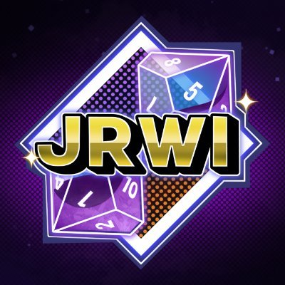

Второстепенные персонажи
Пираты Черной Розы
- Дрей Феррин - дядя Джей Феррин, пропал в бездне.
- Арлин Джеймс - отцовская фигура Чип, пропал в бездне.
- Финн Тайдстарйдер - дедушка Гила Тайдстрайдера, иследователь, пропал в бездне.
Специальные гости
- Клортан - драконорожденный, застрявший на 10 лет в плавучем казино. Помог команде в побеге с корабля.
- Ла Альма - чемпион Высшего турнира. 10 лет был вынужден сражаться на турнире, пока его не одолели Приливные пираты.
- Герцог - саморовозглашенный герцог острова на спине гиганской черепахи.
Другие персонажи
- Маршалл Джон - бывший военный, решивший стать пиратом после того, как Гиллион дал ему вдохновляющую речь.
- Мария, Аслана, Саташа - сестры, хранительницы Острова желаний. Были превращенны в монстров императрицей.
- Капитан Лиззи - капитан знаменитых пиратов Грандберри. Провела свое детство на корабле пиратов Черной розы.
- Каспиан - один из Грандберри пиратов, поладивший с Гиллионом